Algorithms¶
Univariate polynomial evaluation¶
- The evaluation of 1D polynomials uses Horner’s algorithm.
- The evaluation of 1D Chebyshev and Legendre polynomials uses Clenshaw’s algorithm.
Multivariate polynomial evaluation¶
Multivariate Polynomials are evaluated following the algorithm in [1] . The algorithm uses the following notation:
multiindex is a tuple of non-negative integers for which the length is defined in the following way:
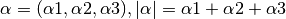
inverse lexical order is the ordering of monomials in such a way that 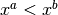 if and only if there exists 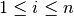 such that 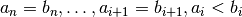.
In this ordering 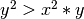 and 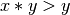
Multivariate Horner scheme uses d+1 variables 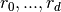 to store intermediate results, where d denotes the number of variables.
Algorithm:
- Set di to the max number of variables (2 for a 2D polynomial).
- Set 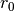 to 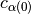, where c is a list of coeeficients for each multiindex in inverse lexical order.
- For each monomial, n, in the polynomial:
- determine 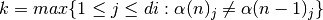
- Set 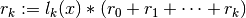
- Set 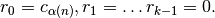
- return 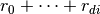
The evaluation of multivariate Chebyshev and Legendre polynomials uses a variation of the above Horner’s scheme, in which every Legendre or Chebyshev function is considered a separate variable. In this case the length of the
 indices tuple is equal to the number of functions in x plus
the number of functions in y. In addition the Chebyshev and Legendre
functions are cached for efficiency.
indices tuple is equal to the number of functions in x plus
the number of functions in y. In addition the Chebyshev and Legendre
functions are cached for efficiency.
| [1] |
|